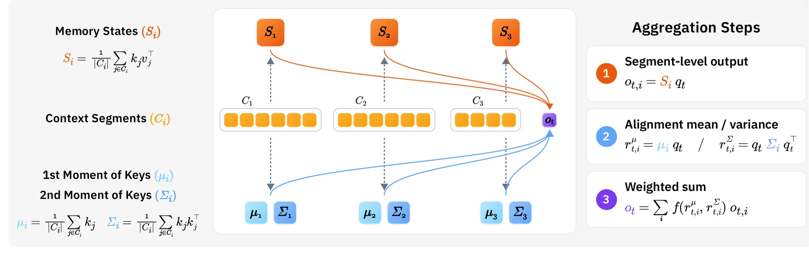
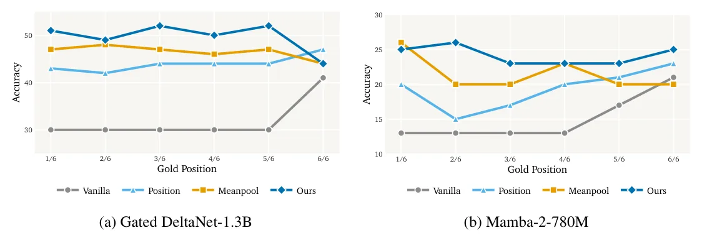

O Problema da Escalabilidade na Atenção Linear
A atenção padrão (self-attention) é o coração dos Transformers modernos, permitindo que modelos processem sequências longas capturando dependências globais. No entanto, sua complexidade quadrática em relação ao comprimento da sequência e o crescimento linear do cache de chaves e valores (KV cache) tornam a escalabilidade computacionalmente proibitiva para contextos muito longos.
Para contornar isso, surgiram as atenções lineares, que reformulam o cálculo para operar em complexidade sub-quadrática. Modelos como DeltaNet e Gated DeltaNet substituem o softmax por mecanismos recursivos que mantêm um único estado de memória fixo. Embora eficientes, esses estados únicos têm capacidade limitada, levando à perda de informação quando o contexto é comprimido excessivamente.
Recentemente, a Atenção Linear Multi-Estado (MSLA) foi introduzida para mitigar essa perda. A MSLA divide o contexto em segmentos e comprime cada um em seu próprio estado de memória. Isso permite maior capacidade de retenção de informação. No entanto, surge um novo desafio: como agregar eficientemente as saídas desses múltiplos estados para produzir a representação final do token?
A Limitação da Agregação por Média e Posição
Os métodos existentes de agregação na MSLA geralmente utilizam uma soma ponderada das saídas dos segmentos. Os pesos são derivados de duas abordagens principais: posição ou média de alinhamento. Métodos baseados em posição assumem que a relevância está ligada à recência, enquanto métodos baseados em média (primeiro momento) calculam a alinhamento médio entre a query e as chaves de cada segmento.
Essas abordagens têm falhas fundamentais. A posição ignora o conteúdo real, favorecendo indevidamente segmentos recentes. A média, por sua vez, é insensível à distribuição interna do alinhamento. Um segmento pode ter um alinhamento médio alto devido a poucas chaves extremamente relevantes, ou um alinhamento uniforme e baixo. A média não consegue distinguir entre esses casos, potencialmente dando peso excessivo a segmentos irrelevantes ou subestimando segmentos com picos de relevância concentrada.
Os autores argumentam que a variância do alinhamento (segundo momento) é crucial para capturar essa distribuição. Ignorar a variância significa perder informação sobre quão concentrada ou dispersa está a relevância dentro de cada segmento de memória. Para corrigir isso, o paper propõe o MERLIN (MomEnt Routing for multi-state LINear attention).

O Mecanismo MERLIN: Roteamento por Momentos
O MERLIN propõe uma maneira simples e geral de melhorar a agregação na MSLA. Em vez de usar apenas a posição ou a média simples, o MERLIN rastreia e utiliza os primeiros e segundos momentos de cada segmento de chaves. O primeiro momento corresponde à média das chaves do segmento, enquanto o segundo momento captura a média dos produtos externos (outer products) das chaves, que está diretamente relacionada à variância e à dispersão da informação.
Durante a inferência, quando uma query é processada, ela acessa os estados de memória dos segmentos. Para cada segmento, a query calcula o alinhamento médio e a variância em relação às chaves armazenadas. Esses dois valores são então usados para determinar o peso de agregação (λ) atribuído a esse segmento. Essa abordagem permite que o modelo seja mais 'consciente do conteúdo' (content-aware), dando mais peso a segmentos que não apenas têm uma média alta, mas também uma estrutura de alinhamento forte e consistente.
Tecnicamente, o MERLIN mantém compactos os momentos das chaves. Isso evita a necessidade de armazenar todas as chaves originais, preservando a eficiência de memória da atenção linear. A agregação final é uma soma ponderada das saídas dos segmentos, onde os pesos refletem tanto a força média quanto a consistência do alinhamento com a query atual.
Configuração Experimental e Treinamento
Para validar o MERLIN, os autores realizaram experimentos em duas arquiteturas base: Gated DeltaNet-1.3B e Mamba-2-780M. Ambos os modelos foram convertidos de variantes de estado único para multi-estado através de um processo de mid-training (treinamento intermediário). O contexto foi dividido uniformemente em segmentos de 256 tokens, resultando em até 64 estados de memória para um contexto de 16K tokens.
O treinamento ocorreu em duas etapas. A primeira etapa utilizou 2 bilhões de tokens do dataset Long-Data-Collections (LDC), com 10% dos dados aumentados com tarefas artificiais de 'agulha no palheiro' (needle-in-a-haystack) do RULER. Isso serviu para ensinar o modelo a ativar seu mecanismo de agregação multi-estado. A segunda etapa usou 60 milhões de tokens, combinando LDC regular com dados sintéticos do RULER HotpotQA e SQuADQA, focando em fortalecer a capacidade de raciocínio em contextos longos.
Os baselines comparados incluíam a agregação vanilla (sem roteamento específico), baseada em posição e baseada em média (Meanpool). A avaliação foi feita em benchmarks de contexto longo, incluindo RULER (para testes de recuperação precisa) e LongBench (para tarefas diversas de QA e sumarização).

Resultados: Superação em Tarefas de Contexto Longo
Os resultados demonstram que o MERLIN consistently supera os métodos de agregação existentes. No benchmark RULER Needle-in-a-Haystack, o MERLIN mostrou ganhos significativos: +8.3% para o Gated DeltaNet-1.3B e +7.0% para o Mamba-2-780M. Isso indica que o modelo é capaz de localizar informações específicas com muito mais precisão, reduzindo o viés de recência presente nos métodos baseados em posição.
No LongBench, que abrange múltiplas tarefas de contexto longo, o ganho foi ainda mais pronunciado. O MERLIN alcançou um aumento de +13.5% no desempenho médio para o Gated DeltaNet e +12.0% para o Mamba-2. Analisando tarefas específicas de QA multi-documento, os ganhos foram robustos, confirmando que a agregação baseada em momentos ajuda o modelo a integrar informações dispersas de forma mais eficaz.
Uma análise qualitativa mostra que o MERLIN atribui pesos de agregação significativamente maiores ao segmento que contém a resposta correta (ground truth) em comparação com os baselines. Enquanto métodos de posição falham em identificar o segmento relevante se ele não for o mais recente, e o Meanpool tem dificuldade em distinguir picos de relevância, o MERLIN consegue focar corretamente na informação essencial.
Eficiência Computacional e de Memória
Um dos objetivos centrais das atenções lineares é a eficiência. O MERLIN foi projetado para adicionar o mínimo de overhead possível. A complexidade de memória e computação permanece sub-linear. O armazenamento dos momentos das chaves é compacto; para o Gated DeltaNet-1.3B, o MERLIN adiciona apenas 66.3M de parâmetros, representando um aumento de 4.6% no tamanho total do modelo.
Para o Mamba-2-780M, o overhead é ainda menor, com 18.9M de parâmetros adicionais, ou 2.2% do total. Isso contrasta favoravelmente com métodos que poderiam exigir o armazenamento de mais estados ou estruturas mais complexas. O MERLIN mantém a velocidade de inferência alta, pois o cálculo dos momentos e dos pesos de agregação é computacionalmente leve em comparação com o custo de processar a sequência inteira.
Além disso, o MERLIN não requer mudanças na estrutura fundamental do modelo, sendo um mecanismo de roteamento plug-and-play para o componente de agregação da MSLA. Isso facilita sua adoção em outras arquiteturas que utilizem atenção linear multi-estado.
Limitações e Escopo
Apesar dos resultados promissores, o paper reconhece limitações importantes. Os experimentos foram conduzidos com dois backbones específicos (Gated DeltaNet e Mamba-2) e um comprimento de contexto de 16K tokens. Não foi testado em modelos maiores ou contextos ainda mais extensos, o que deixa em aberto como o MERLIN se comportaria em escalas de centenas de milhares de tokens.
Além disso, o estudo compara o MERLIN apenas contra baselines específicos (Vanilla, Position, Meanpool) com segmentação uniforme. Outros métodos de segmentação (separation) ou agregação mais avançados não foram incluídos na comparação direta. A generalização do MERLIN para outras arquiteturas de atenção linear ou para tarefas que não envolvam raciocínio de longo alcance também não foi totalmente explorada.
Os autores também notam que o treinamento dependeu de dados sintéticos aumentados para ativar o mecanismo de agregação. Isso sugere que o desempenho final pode ser sensível à qualidade e à quantidade dos dados de mid-training. Futuros trabalhos precisam investigar a robustez do MERLIN em cenários de treinamento mais diversificados e em escalas maiores.
Conclusão
O MERLIN apresenta uma contribuição clara e prática para o campo de modelos de linguagem eficientes. Ao incorporar a variância do alinhamento na agregação de estados multi-estado, ele resolve uma lacuna importante nos métodos anteriores que dependiam apenas de média ou posição.
Os resultados mostram que pequenas mudanças na forma como o modelo 'olha' para a informação armazenada podem gerar ganhos significativos de precisão, sem comprometer a eficiência computacional. Para desenvolvedores interessados em escalar modelos para contextos longos sem o custo proibitivo da atenção quadrática, o MERLIN oferece uma rota viável e bem fundamentada.
O paper não vende a solução como uma revolução completa, mas como um componente útil e generalizável. A ênfase na honestidade sobre as limitações de escala e escopo reforça a credibilidade dos resultados. À medida que a demanda por contextos longos cresce, mecanismos como o MERLIN serão essenciais para equilibrar capacidade e eficiência.
O que fica
- MSLA divide o contexto em segmentos, mas a agregação anterior ignorava a variância do alinhamento entre query e chaves.
- MERLIN armazena os primeiros e segundos momentos das chaves para calcular pesos de agregação mais precisos e conscientes do conteúdo.
- Em benchmarks de contexto longo, MERLIN supera métodos base com ganhos de até 13.5% no LongBench e melhora a recuperação de informação.
- O overhead de memória é mínimo (cerca de 4.6% no Gated DeltaNet), mantendo a eficiência computacional da atenção linear.
Paper original: Multi-State Linear Attention with Generalized Second-Order Routing
Comentários
Nenhum comentário ainda. Seja o primeiro.